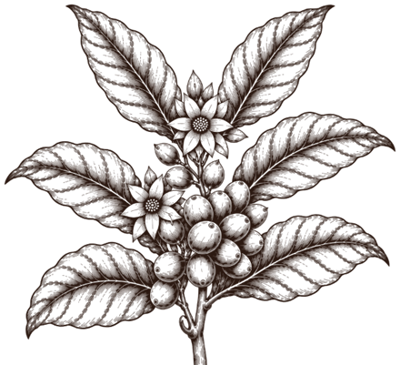
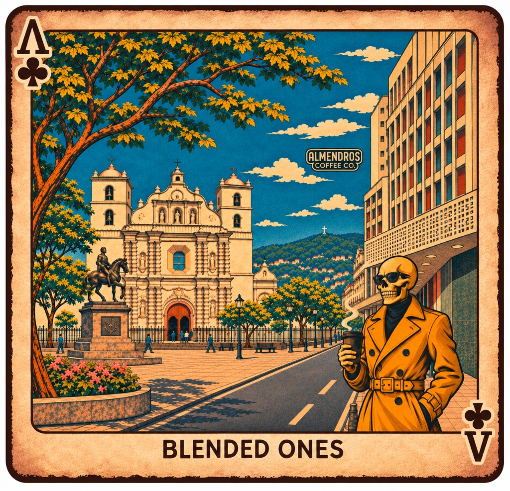

“Desde las montañas de Comayagua hasta las calles de Tegucigalpa.”
Dos variedades cultivadas en una misma finca de altura se encuentran en una edición coleccionable que celebra el carácter cafetalero de Comayagua y el pulso urbano del centro histórico de Tegucigalpa.
Una proporción exacta en partes iguales donde dos procesos contrastantes logran equilibrio, claridad y expresión aromática en cada taza.
50%Geisha Honey125 g
×
50%Catimor Natural125 g
A ♣Componente A50% · 125 g
Geisha Honey
Variedad
Geisha
Proporción
50% (125 g)
Proceso
Honey tradicional
Secado conservando el mucílago natural de la cereza sobre el grano, lo que aporta un dulzor melado suave y resalta el carácter aromático delicado propio de la variedad Geisha.
Finca Los Almendros♣ A
B ♣Componente B50% · 125 g
Catimor Natural
Variedad
Catimor
Proporción
50% (125 g)
Proceso
Fermentación natural anaeróbica
Fermentación
120 horas
Cerezas enteras fermentadas en ambiente sin oxígeno durante 120 horas antes del secado natural. En la mezcla, el Catimor juega un papel clave aportando sabores intensos en sus notas frutales, que suman carácter y jugosidad frente a la sutileza del Geisha.
Finca Los Almendros♣ B
♣ Experiencia sensorial
Perfil de taza
“Una combinación que une el dulzor melado y las fragancias delicadas de Geisha Honey con la intensidad y jugosidad de las notas frutales del Catimor Natural. El resultado es una taza aromática, expresiva y con una acidez agradable, clara y ligera al paladar.”
Perfil de tuesteMedio
Tostado en punto medio para respetar la limpidez de ambos procesos y ofrecer una experiencia equilibrada, amable y fácil de disfrutar todos los días.
I
Dulzor melado
Suavidad envolvente aportada por el proceso Honey tradicional.
II
Carácter aromático
Fragancias delicadas y limpias propias de la variedad Geisha.
III
Notas frutales intensas
El Catimor natural anaeróbico de 120 horas juega un papel decisivo con sabores intensos y jugosos en sus notas frutales.
IV
Acidez clara y ligera
Sensación fresca, agradable y equilibrada de principio a fin.
♣ Origen agrícola real
Nuestra finca
En las montañas de San Luis, Comayagua, Finca Los Almendros cultiva tanto el Geisha como el Catimor que dan vida a BLENDED ONES. Bajo el cuidado del productor Fernando Padilla, entre los 1,250 y 1,300 metros sobre el nivel del mar, la cosecha 2026 reúne trabajo de campo, selección cuidadosa y trazabilidad de principio a fin en una misma tierra.
Ambas variedades provienen de Finca Los Almendros.

Ficha de trazabilidadHONDURAS
Finca
Finca Los Almendros
Región
San Luis, Comayagua, Honduras
Productor
Fernando Padilla
Altitud
1,250–1,300 msnm
Cosecha
2026
Variedades en finca
Geisha & Catimor
♣ Tributo visual al centro histórico
Una historia ilustrada
Mientras cada grano nace en las montañas de San Luis, Comayagua, el arte de BLENDED ONES rinde homenaje al corazón urbano de Tegucigalpa: sus fachadas históricas, su memoria cívica y el placer de recorrer sus calles con un buen café en mano.

Tocá un número para explorar los íconos de la ilustración
El caminante de gabardina mostaza: en primer plano, nuestro personaje recorre el centro con lentes oscuros y café en mano, uniendo el ritual del café de especialidad con la identidad callejera y coleccionable de la capital.
♣ Café de especialidad hondureño · Edición coleccionable
Lleváte un pedacito de Tegus
BLENDED ONES nace en las montañas de Comayagua e inspira su arte en el corazón de la capital. Ya sea para tu ritual diario de café o para compartir una bolsa con identidad hondureña, realizamos envíos a todo el país.